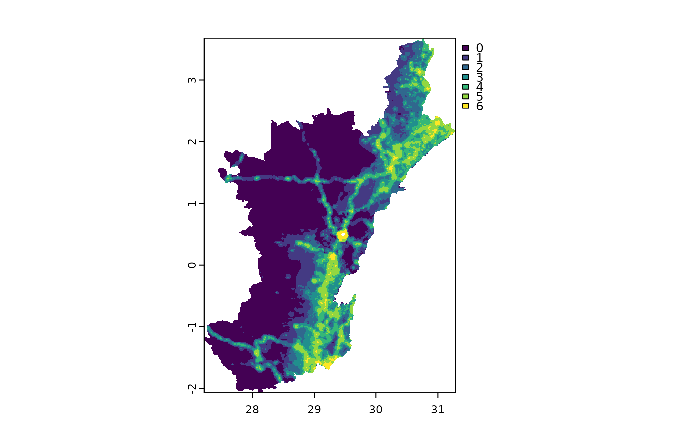

Plot a raster cropped to sub-region(s) of a country
Source:R/SVEIRD.BayesianDataAssimilation.R
maskAndClassifySusceptibleSpatRaster.RdPlot a raster cropped to a specific region(s)
Examples
library(lattice)
subregionsSpatVector <- terra::vect(
system.file(
"extdata",
## COD: Nord-Kivu and Ituri (Democratic Republic of Congo)
"subregionsSpatVector",
package = "spatialEpisim.foundation",
mustWork = TRUE
)
)
susceptibleSpatRaster <- terra::rast(
system.file(
"extdata",
"susceptibleSpatRaster.tif", # Congo population
package = "spatialEpisim.foundation",
mustWork = TRUE
)
)
masked <- maskAndClassifySusceptibleSpatRaster(subregionsSpatVector,
susceptibleSpatRaster)
terra::plot(masked)

if (FALSE) { # \dontrun{
maskAndClassifySusceptibleSpatRaster(getSubregion("CZE", "Prague"),
getCountryPopulation.SpatRaster("CZE"))
maskAndClassifySusceptibleSpatRaster(getSubregion("NGA", "Lagos"),
getCountryPopulation.SpatRaster("NGA"))
maskAndClassifySusceptibleSpatRaster(getSubregion("COD", "Ituri"),
getCountryPopulation.SpatRaster("COD"))
maskAndClassifySusceptibleSpatRaster(getSubregion("COD", c("Nord-Kivu", "Ituri")),
getCountryPopulation.SpatRaster("COD"))
} # }